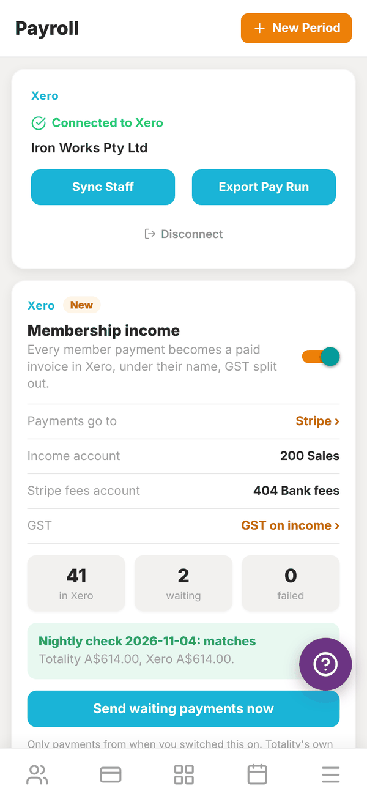
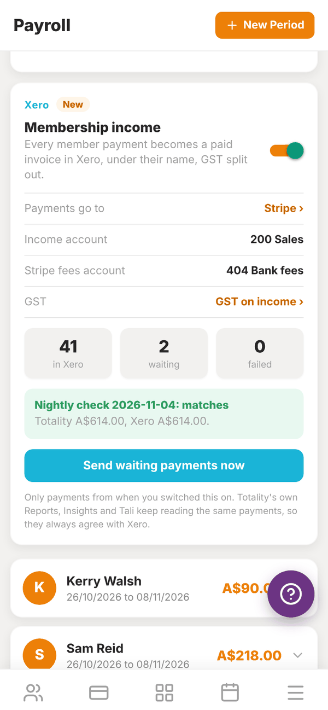

Totality for gym owners
Xero payroll and membership income
Connect Xero, sync your trainers, send pay runs to Xero as drafts, and have every member payment recorded in Xero automatically.
If you use Xero, Totality can send it two things:
- Pay runs: a draft pay run built from your Payroll rates and work, ready to check and approve in Xero.
- Membership income: every member payment Totality takes, recorded in Xero as a paid invoice, with GST and Stripe fees split out.
Both live on the Payroll screen (More, then Staff, then Payroll).
Connect Xero#
- On Payroll, find the Connect Xero Payroll card and tap Connect Xero.
- Sign in to Xero and pick your organisation. Allow access.
- Back in Totality, the card says Connected to Xero with your organisation's name.


Sync your staff#
Tap Sync Staff. Totality creates each of your trainers as an employee in Xero Payroll, using their name and email, and remembers the link. You see "Synced 3 trainers". Trainers already linked are counted as "already mapped". Run it again whenever you add a trainer.
Export a pay run#
- Make sure each trainer's pay rates are set and their sessions and classes are marked complete.
- Tap Export Pay Run.
- Enter the Pay Period Start and Pay Period End.
- Tap Export to Xero.
Totality creates a draft pay run in Xero covering completed PT sessions (at the PT rate for that session length), completed classes (at the class rate), logged hours (at the hourly rate) and any custom amounts. Open Xero to check it, add tax and super, and approve it.
If a trainer's pay cannot be worked out (a missing rate, two clashing rates, or hours with no rate), they are left out and named in the message so nobody is paid the wrong amount. A trainer who is not linked to a Xero employee is listed with "not linked to a Xero employee (tap Sync Staff)".
Membership income#
Once Xero is connected, a Membership income card appears under it. Turn it on, and every member payment Totality takes (memberships, PT packages, POS and shop sales) becomes a paid sales invoice in Xero under the member's name, with GST split out. Refunds become credit notes.
- Turn on Membership income.
- Your first Xero connection was for payroll only. Tap Reconnect Xero with accounting access and allow it in Xero.
- Under Which Xero bank account does your card money clear into?, pick the account. Usually this is a Stripe account in Xero. Payments and Stripe fees are recorded there, so the payout matches to the cent. If you see "No bank accounts found in Xero", add one in Xero first (Accounting, then Bank accounts).
- Check Income account, Stripe fees account and GST.
The card counts payments in Xero, waiting and failed. Payments are sent every 15 minutes, or tap Send waiting payments now. Only payments from when you switched this on are sent.
Every night at 2:30am Totality compares its total for the day with Xero's. The result shows on the card, for example "Nightly check: matches". If they differ, you get a notification.
Disconnect#
Tap Disconnect under the Xero buttons. Nothing already in Xero is removed.
Questions#
Does Totality pay my staff through Xero?
No. It creates a draft pay run. You check and approve it in Xero, and Xero handles payslips, tax and super.
A trainer is missing from the pay run.
Either they are not linked to a Xero employee (tap Sync Staff), or their pay could not be worked out. The message after exporting says which, and why.
Will membership income double up with my Stripe bank feed?
The payments are recorded in the clearing account you pick. When Stripe pays out to your bank, reconcile the transfer from that clearing account, so each payment is only counted once.
Do Totality's own reports change when I turn this on?
No. Reports, Insights and Tali keep reading the same payments, so they always agree with Xero.